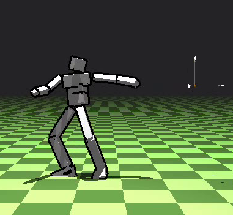
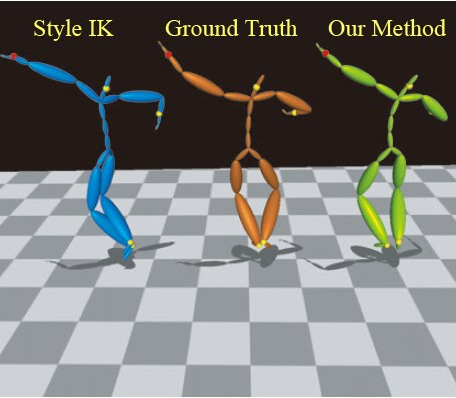

- TOURNIER Maxime
- Born 28th of September, 1984
- French Nationality
-
Ph.D. Computer Animation
Thesis Abstract
In this thesis, we propose novel, data-driven
representations for human poses, suitable for real-time character
animation. In the first part, we exploit Lie group statistical
analysis techniques to approximate the pose manifold of a
motion capture sequence by a reduced set of geodesic coordinates. We
propose an inverse kinematics algorithm using this reduced
parametrization to automatically produce poses close to the learning
set. We demonstrate the value of the resulting pose model by an
application to motion capture data compression, where only a few
end-effector trajectories are used to recover a good approximation of
the initial data.
In the second part, we extend this approach to the
physically-based animation of virtual characters. The reduced
parametrization provides generalized coordinates in a Lagrangian
formulation of mechanics. We derive an explicit time integrator by
approximating existing variational integrators, and propose a damping
model based on the Levenberg-Marquardt algorithm. We also describe a
geometric, data-driven, angular limit learning algorithm and its
associated kinematic constraints.
In the third part, we reach the problem of task-space motion
control. By formulating both physical simulation and inverse
kinematics as two sequential quadratic programs, we propose a simple
pseudo-control algorithm that interpolates between the two
metrics. This allows for an intuitive trade-off between uncontrolled
simulation and inverse-kinematics. Since this approach makes use of
external forces, we propose an alternate formulation by the relaxation
of the true, non-convex control problem into a convex quadratic
program. These algorithms are evaluated on simple balance and tracking
controllers.
Publications
| 2012 |

|
| 2011 |

|
| 2009 |

|
|
| 2008 |

|
| 2007 |

|
Work Experience
|
2012 - present
|
- Post-doctoral researcher
- Simulation and modeling of human/object
interactions
- LIRMM laboratory (DEMAR team). Funding: ANR
SoHuSim.
|
|
2007 - 2011
|
- Doctoral Researcher in Computer Science
- Dimension reduction for human motion synthesis
- Jean Kuntzmann laboratory
(EVASION team,
INRIA Rhône-Alpes, France)
|
|
2009 (6 months)
|
- Visiting Ph.D. Student
- Physically-based character animation
- Collaboration with Paul Kry
- McGill University, Montréal, Canada
|
|
2007 (5 months)
|
|
|
2006 (5 months)
|
- Engineer final internship
- Design & development of a motion capture annotation tool
- Ubisoft, Montreuil, France
|
|
2005 (2 months)
|
- Engineer 2nd year internship
- Engineering for deformable objects simulation
(SOFA framework)
- INRIA Rhône-Alpes, France
|
|
2005 (1 month)
|
- Engineer 1st year internship
- Development of a monitoring (SNMP) application and associated website
- WOPR-Hosting, Lausanne, Switzerland
|
Education
|
2007 - 2011
|
|
|
|
2006 - 2007
|
- M.Sc. in Computer Graphics
- Motion capture data modeling for compression
- Institut National Polytechnique de Grenoble
(INPG), France
- Advisor: Lionel Reveret
|
|
|
2003 - 2006
|
- Engineer in Computer Graphics
- Imagery & Virtual Reality
- Ecole Nationale Supérieure d'Informatique et Mathématiques Appliquées de Grenoble
(ENSIMAG),
France
|
|
Technical Skills
| Expertise |
- Character animation
- Articulated rigid-body physical simulation
|
| Teaching |
- Scientific event: 2D game programming for junior/high-school students
- Algorithmics in OCaml: 1st year University students classwork (48h)
|
| Programming |
- C/C++11, Lua, OCaml, Ruby, Java. Web: HTML/CSS/JavaScript, SQL
|
| Libraries |
- Boost, Qt, Eigen, OpenGL, OpenCV
|
Operating
Systems |
- Unix (Linux, FreeBSD, MacOS)
- Windows basics
|
| Language |
- English (fluent)
- French (native)
- German (basics)
|
| Interests |
Rock-climbing, ski/snowboard, photography, guitar
|
Last modified: Mon Feb 4 11:03:24 CET 2013